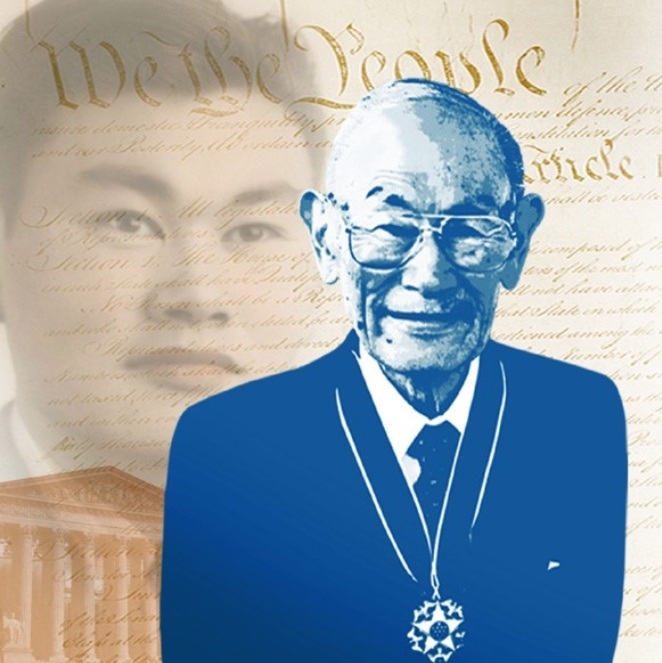

The American Home Front
and Hard Choices
In 1942, a 19-year-old woman named Sybil Lewis left her home in Sapulpa, Oklahoma and took a bus to Los Angeles. She had heard that war factories were hiring. She had never worked with machines before. Within weeks, she was riveting the fuselage panels of Lockheed aircraft at a plant in Burbank, California. She was one of six million American women who stepped into the workforce to keep the country running while the men were away. But as the war went on, a harder question emerged: the United States was fighting for freedom and democracy overseas, so why were some Americans still denied those things at home?
Women at War: The Home Front Workforce

When the United States entered World War II, factories across the country faced a crisis. Millions of men were leaving for military service, and someone had to build the ships, planes, tanks, and ammunition needed to fight a two-front war. The government launched a massive campaign to recruit women into industrial work — jobs that had almost exclusively been held by men before the war.
The home frontThe civilian side of the war effort — all the factories, farms, and communities inside the United States that supported the military by producing weapons, food, and supplies. became its own kind of battlefield. Women welded ships at Kaiser Shipyards in Richmond, California. They assembled bombers at Boeing plants in Seattle. They loaded artillery shells in ammunition depots across the Midwest. Their labor was not optional; it was essential.
The government understood that recruiting women required a cultural shift. Posters and magazine ads created the image of "Rosie the Riveter" — a woman in factory clothes with her sleeves rolled up and her fist raised. The message was clear: working in a factory was patriotic, strong, and modern. The campaign worked. By 1944, women made up 37 percent of the entire American workforce.
For many women — especially Black women and women from poor families — the war created the first real chance to earn a living wage. Before the war, most well-paying factory jobs were closed to them entirely. After the war, many were forced out of those jobs when the men returned. But the experience changed what women believed was possible. The movement for women's equal rights that grew in the 1960s and 1970s was partly built on the ground these women broke during the war.
"Women must learn to play the game as men do. I am happy that women are being called upon for service in so many lines. What we need now is to be sure that women's contribution to this war effort is recognized, valued, and made permanent."Eleanor Roosevelt, address to the National Conference on Women in War Industries, 1942.
The First Lady is arguing that women's wartime work should not disappear after the war ends — she wants women to be seen as permanent, valued members of the workforce, not just emergency replacements.
Question 1: What is Eleanor Roosevelt asking for on behalf of women workers? Use her own words to explain what she means by "permanent."
Question 2: The EQ asks whether all sacrifices were equally shared during WWII. Based on this source and what you have read, what does Roosevelt suggest about how women were being treated?
Fighting for Freedom: Black Americans, the 442nd, and the Code Talkers
As American soldiers fought Nazi racism in Europe, millions of Black Americans, Japanese Americans, and Native Americans were serving in a segregated military. The United States Army was officially segregated until 1948, meaning Black soldiers trained separately, ate separately, and often received worse equipment than white units. Despite this, Black Americans enlisted and were drafted by the hundreds of thousands. They fought for a country that denied them basic civil rights at home. Many asked a painful question: why are we fighting for freedom overseas when we do not have it here?

The Tuskegee AirmenThe first Black military pilots in the U.S. Army Air Forces, trained at Tuskegee, Alabama during WWII; they flew over 1,500 missions and proved that Black Americans could fly combat aircraft at the highest level. were the first Black military aviators in American history. They trained at Tuskegee Army Air Field in Alabama — a state where segregation was law in every part of daily life. By 1945, the 332nd Fighter Group had flown more than 1,500 combat missions in Europe and North Africa. They escorted American bombers deep into Germany. Their bomber groups reported some of the lowest loss rates in the entire Eighth Air Force. Their success forced the military to reconsider what Black Americans could do — though it did not end segregation overnight.
Meanwhile, Japanese Americans faced a cruel contradiction. Even as the U.S. government was locking up Japanese American families in incarceration camps, Japanese American men were volunteering to fight for the United States. The 442nd Regimental Combat TeamA U.S. Army unit made up almost entirely of Japanese American soldiers who became one of the most decorated units in American military history. was made up almost entirely of Nisei soldiers — American-born citizens whose parents had come from Japan. Their motto was "Go for Broke." They fought in Italy and France. By the end of the war, the 442nd had earned more combat decorations per soldier than any other unit in U.S. military history.
Native American soldiers made a different kind of contribution. During the brutal island campaigns in the Pacific, the U.S. Marines recruited Navajo men to serve as radio operators. Their job was to transmit battlefield messages using a code based on the Navajo language. The Navajo Code Talkers sent messages so complex that Japanese code breakers never cracked a single one. Without their work, some military historians believe the Battle of Iwo Jima could not have been won. Major Howard Connor of the Marines said it directly: "Were it not for the Navajos, the Marines would never have taken Iwo Jima."
Tuskegee Airmen
Over 1,000 Black pilots trained at Tuskegee, Alabama. They flew P-51 Mustangs over Europe and North Africa. Their painted red tail fins earned them the nickname "Red Tails."
442nd Regiment
Japanese American soldiers whose families were often imprisoned in camps while they fought. They rescued the "Lost Battalion" in France in October 1944 and suffered severe casualties doing it.
Navajo Code Talkers
Over 400 Navajo men served as Marine radio operators. Their code was never broken. The U.S. government kept their contribution classified until 1968, more than 20 years after the war.

The story of these three groups raises a sharp question that Americans are still working through today. If someone is willing to die for a country, do they deserve equal rights in that country? For Black Americans, the answer at home was still no in 1945. Japanese Americans came home from the war to find their families still behind barbed wire. Navajo Code Talkers were forbidden to even talk about their service until 1968. The gap between what America said it stood for and how it treated its own people was impossible to ignore. That gap became the fuel for the Civil Rights Movement that followed.
Internment: Fear, Prejudice, and Executive Order 9066

After the attack on Pearl Harbor, fear and anti-Japanese prejudice spread rapidly across the West Coast. Many Americans assumed that Japanese Americans — even those who had been born in the United States — might secretly be loyal to Japan. There was no evidence for this fear. But fear, combined with existing racism toward Asian Americans, pushed the government to act.
On February 19, 1942, President Roosevelt signed Executive Order 9066. It gave the military the power to remove anyone from military zones — which meant the entire West Coast. Over the following months, more than 120,000 people of Japanese descent were forced to leave their homes and report to assembly centers. They had days to sell their property, businesses, and belongings. Most sold at a fraction of what things were worth; some lost everything. They were then transferred to one of ten internmentThe forced imprisonment of a group of people — especially during wartime — based on their identity rather than any individual crime. camps in remote desert locations in California, Idaho, Utah, Arizona, Wyoming, Colorado, and Arkansas.
Two-thirds of those incarcerated were Nisei: American citizens by birth. They had committed no crime. No charges were ever filed. No trials were ever held. Families lived in crowded wooden barracks behind barbed wire, watched by armed guards in watchtowers. Temperatures reached over 100 degrees in summer and dropped below freezing in winter. Schools were set up inside the camps. Children learned the Pledge of Allegiance — a pledge about liberty and justice for all — behind a fence.

One man refused to go. Fred Korematsu was a 23-year-old welder from Oakland, California. He had been born in the United States and had never set foot in Japan. He had already tried to enlist in the Navy but was rejected because of his Japanese ancestry. When internment orders came, he did not report. He was arrested, convicted, and sent to a camp. His lawyers took the case to the Supreme Court.
In 1944, the Supreme Court ruled in Korematsu v. United States that the internment was constitutional — that military necessity could override civil rights during wartime. It was a 6-3 decision and one of the most criticized rulings in Supreme Court history. In a famous dissent, Justice Robert Jackson warned that the decision placed a loaded weapon in the hands of any future government that wanted to use military necessity as an excuse to imprison Americans. He was right to worry. The Korematsu ruling was not formally overturned until 2018.
In 1988, Congress passed the Civil Liberties Act, which formally apologized to Japanese Americans and paid $20,000 to each surviving person who had been incarcerated. President Reagan signed it into law. The United States admitted that internment had been driven by "race prejudice, war hysteria, and a failure of political leadership." But for the more than 120,000 people who lost homes, businesses, and years of their lives, that apology came more than four decades too late.
San Diego's Japanese American Community and the Camps

San Diego had a significant Japanese American community before the war, concentrated in the Logan Heights and National City neighborhoods and in farming communities in the Chula Vista and El Cajon valleys, where Japanese American families grew flowers, strawberries, and celery.
When Executive Order 9066 took effect, these families were among those forced to report to the Santa Anita Assembly Center near Los Angeles before being transferred to camps. Many lost their farms and businesses permanently. After the war, some returned; many did not. The Chula Vista Japanese Flower Growers Association, one of the most productive flower-growing cooperatives in California before 1942, never fully recovered.
Hard Choices: The Atomic Bomb, the Holocaust, and the End of the War
By the spring of 1945, Germany had surrendered and the war in Europe was over. But Japan fought on. American military planners estimated that an invasion of the Japanese home islands could cost between 250,000 and one million American lives, along with millions of Japanese military and civilian casualties. The war had already killed more than 400,000 Americans. Something had to end it — and fast.

The United States had been secretly building an atomic bombA weapon that uses nuclear fission — the splitting of atoms — to create a massive explosion with devastating heat, blast, and radiation. since 1942, under a secret program called the Manhattan Project. Scientists in Los Alamos, New Mexico, led by physicist J. Robert Oppenheimer, tested the first device on July 16, 1945. When it detonated, Oppenheimer later recalled a line from Hindu scripture: "Now I am become Death, the destroyer of worlds." The weapon worked. President Harry Truman now had a choice to make.
On August 6, 1945, an American B-29 bomber named the Enola Gay dropped an atomic bomb on the Japanese city of Hiroshima. An estimated 80,000 people died instantly. The heat was so intense that shadows of vaporized human beings were burned into stone walls. Three days later, a second bomb destroyed Nagasaki, killing an estimated 40,000 more. Japan announced its unconditional surrenderA surrender in which the losing side agrees to all terms set by the winner, giving up completely without any conditions or negotiations. on August 15, 1945. World War II was over.
- An invasion of Japan could have killed over one million Americans and millions of Japanese.
- Japan showed no sign of surrendering; soldiers and civilians were prepared to fight to the last person.
- Ending the war quickly saved lives on both sides, including Allied prisoners of war dying in Japanese camps.
- The bomb brought a swift end to a war that had already killed tens of millions of people worldwide.
- The bombs deliberately targeted civilian cities, not military bases — most victims were ordinary people.
- Japan was already economically strangled by naval blockades; some historians argue it was close to surrender anyway.
- No warning was given to civilians; there was no opportunity to evacuate.
- Using atomic weapons set a precedent for nuclear warfare that still threatens the entire world today.


While the war raged in the Pacific, a different catastrophe was unfolding in Europe. The Holocaust was the systematic murder of six million Jewish people and millions of others — including Roma, people with disabilities, gay people, and political prisoners — by the Nazi German government. The Nazis built an industrial system of death camps, including Auschwitz, where over one million people were killed. American military forces liberated many of these camps in 1945 and were shocked by what they found.

The question of American responsibility for the Holocaust is painful. By 1942, the U.S. government had reliable information that Nazi Germany was systematically murdering Jews across Europe. Yet the United States refused to bomb the railroad lines leading to Auschwitz, even when it had the air power to do so. It turned away ships carrying Jewish refugees from Europe, including the MS St. Louis in 1939, whose passengers were forced to return to Europe; hundreds of them later died in the Holocaust. The reasons given were bureaucratic and political; the consequences were measured in lives.
"I have never felt able to describe my emotional reactions when I first came face to face with indisputable evidence of Nazi brutality and ruthless disregard of every shred of decency. I visited every nook and cranny of the camp because I felt it my duty to be in a position from then on to testify at first hand about these things in case there ever grew up at home the belief or assumption that 'the stories were propaganda.'"General Dwight D. Eisenhower, letter to General George Marshall, April 15, 1945, after visiting Ohrdruf concentration camp.
Eisenhower walked through the camp himself and deliberately looked at every part of it because he was already worried that people back home would not believe what had been done there — and he wanted to be a witness who could prove it was real.
Question 1: Why did Eisenhower make a point of visiting "every nook and cranny" of the camp? What was he afraid people back home might say?
Question 2: This lesson asks whether all sacrifices during WWII were equally shared. Whose suffering does Eisenhower's letter reveal, and what does it suggest about what the United States was actually fighting against?
The hard questions raised on the American home front in 1942 are still unanswered in 2024.
Every major debate from this lesson — who gets treated fairly during a national emergency, who pays the price for decisions made in fear, and what a government owes its own people — is still being argued in courts, in Congress, and in the streets right now.
- "Supreme Court Upholds Trump Travel Ban, Citing National Security — and Formally Repudiates Korematsu Ruling" — The New York Times, 2018
- "The 442nd Regimental Combat Team Was Awarded the Congressional Gold Medal — 70 Years After the War Ended" — Smithsonian Magazine
- "The Debate Over Nuclear Weapons Has Never Gone Away" — BBC News

If your country asked you to sacrifice everything — your home, your business, your freedom — in the name of national security, and you had done nothing wrong, what would you want the country to owe you in return?